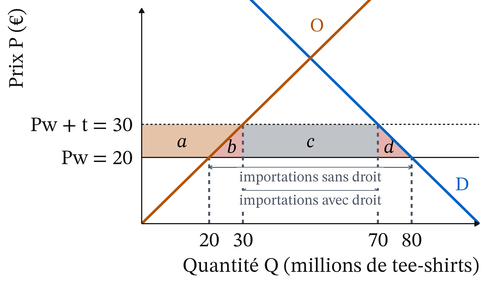

Les droits de douane ont des objectifs affichés, et quelqu’un en paie le coût
Objectifs affichés : recettes, industrie naissante ou en difficulté, rapport de force, sécurité économique, climat (MACF)
Coût : qui paie vraiment, l’exportateur étranger, l’importateur ou le consommateur ?
Rappel : cinq notions suffisent pour la séance
Coût d’opportunité : ce à quoi on renonce
Surplus : aires entre les courbes et le prix
Perte sèche : surplus qui disparaît pour tous
Incidence : qui supporte vraiment la taxe
Solde commercial : exportations moins importations
Ricardo : un pays gagne à l’échange même s’il est moins productif partout
1821 · Thomas Phillips, domaine public, Wikimedia Commons
David Ricardo (1817), On the Principles of Political Economy and Taxation, chap. 7 · école classique. Ce qui compte : le coût d’un bien mesuré en l’autre bien, à l’intérieur de chaque pays.
Le gain de l’échange vient des écarts de coûts d’opportunité
Avantage absolu : moins de travail que le partenaire
Avantage comparatif : coût d’opportunité plus faible, dès que les coûts d’opportunité des deux pays diffèrent
A produit tout plus vite, mais B a l’avantage dans les vêtements
Blé (1 t)
Vêtements (1 lot)
Heures
Pays A
2 h
4 h
120 h
Pays B
12 h
6 h
240 h
Un lot de vêtements coûte 2 t de blé dans A, 0,5 t dans B.
La spécialisation produit plus des deux biens avec les mêmes heures
Autarcie (moitié des heures à chaque bien) : 40 t de blé et 35 lots
Spécialisation (A : blé, B : vêtements) : 60 t et 40 lots
L’échange tombe entre les deux coûts d’opportunité : chacun y gagne
Figure 1
Exemple fictif : A vend 20 t de blé contre 20 lots.
Piège : être moins productif partout n’empêche pas de gagner à l’échange
B est moins productif pour les deux biens et gagne pourtant à l’échange. Sa faible productivité se paie dans ses salaires, plus bas, pas dans l’absence d’échange.
Heckscher et Ohlin : l’ouverture enrichit le pays, pas tous ses habitants
Eli Heckscher · photographe inconnu, domaine public, Wikimedia Commons
1950 · photographe inconnu, CC BY-SA 4.0, redimensionné, Wikimedia Commons
Heckscher (1919), Ohlin (1933) · néoclassiques. Exportations : biens riches en facteur abondant. Stolper-Samuelson (1941) : l’ouverture enrichit le facteur abondant, appauvrit le facteur rare.
Un droit de douane est une taxe, et un petit pays subit le prix mondial
Droit de douane : taxe sur un bien importé, en % (ad valorem) ou en montant t par unité (spécifique)
Petit pays : prend le prix mondial Pw comme donné ; avec un droit, son prix intérieur devient Pw + t
Un droit fait monter le prix intérieur de tout le droit
Figure 2
Graphique théorique. Consommateurs : −(a + b + c + d). Producteurs : +a. État : +c. Perte sèche : b + d.
Pause
Reprise dans quinze minutes.
Un droit de 10 € sur un tee-shirt à 20 € réduit les importations de 60 à 40 millions

Figure 3
D : Q = 100 − P. O : Q = P. Pw = 20 €, t = 10 €. Exemple fictif.
Les consommateurs perdent 750 M€, les producteurs gagnent 250 M€
Consommateurs : (80 + 70) ÷ 2 × 10 = 750 M€ (a + b + c + d)
Producteurs du pays : (20 + 30) ÷ 2 × 10 = 250 M€ (a)
L’État encaisse 400 M€ : le pays perd 100 M€, produire trop cher et acheter moins
État : 10 € × 40 millions = 400 M€ (c)
Perte sèche : 750 − 250 − 400 = 100 M€
b : 50 M€, produire cher ce qui s’importe à 20 €
d : 50 M€, achats perdus
Piège : ce n’est pas l’étranger qui paie dans un petit pays
L’exportateur étranger reçoit toujours 20 € : il vend moins, mais au même prix. Les acheteurs du pays paient les 10 €. Il faut regarder qui voit son prix changer, pas qui est nommé dans la loi.
Dans un grand pays, l’étranger paie la baisse de son prix divisée par le droit
Prix hors droit : de 20 € à 19 €, droit de 10 €
Acheteurs : +9 € ; exportateurs : −1 €
Part de l’étranger : 1 ÷ 10 = 10 %
En 2025, les acheteurs américains ont supporté près de 90 % des droits
Un droit sur l’acier protège les aciéries et pénalise ceux qui l’achètent
Étape
Ce qui se passe
1
t renchérit l’acier importé
2
Les aciéries gagnent (a)
3
Le Cm de l’automobile monte
4
Les acheteurs paient plus
5
Ces entreprises vendent moins
Dans une chaîne de valeur, chaque passage de frontière peut être taxé
Un porte-conteneurs à quai au port de Los Angeles. Photo : Downtowngal, CC BY-SA 4.0, Wikimedia Commons.
Les pertes de l’ouverture se concentrent sur des territoires
1990-2007 : les zones américaines exposées à la Chine ont subi plus de chômage et des salaires plus bas
Environ un quart du recul de l’emploi industriel
(Autor, Dorn et Hanson, 2013)
Le MACF fait payer le carbone importé comme le carbone européen
Contre la fuite de carbone ; régime définitif depuis le 1er janvier 2026
Ciment, fer et acier, aluminium, engrais, électricité, hydrogène
Payant en 2027 (Commission européenne, 21/10/2026 ; Mayer Brown, 17/10/2025)
Ce que l’analyse établit : ce sont les acheteurs américains qui paient
Droits de 2018 et de 2025 payés à 86 % ou plus par les importateurs et consommateurs américains
Un droit transfère du revenu et en détruit une partie
(Amiti et al., 2019 ; Liberty Street Economics, 12/02/2026)
Un déficit bilatéral n’est pas une perte
Md€
2023
2024
2025
UE vers États-Unis
505,9
535,6
554,7
États-Unis vers UE
347,8
337,4
356,7
Biens seulement. Source : Eurostat, ext_lt_maineu, mis à jour le 16/10/2026, téléchargé le 21/10/2026.
Faut-il protéger ? Un jugement sur le poids de chaque intérêt
Pouvoir d’achat de tous les consommateurs
Emplois et territoires concentrés qui perdent
Rapport de force, face au risque de représailles
Dépendance envers un fournisseur étranger
Climat, quand le droit porte sur le carbone importé
Qui peut fixer les droits de douane ? Le Congrès aux États-Unis, l’Union en Europe
Cour suprême, 20/02/2026, six voix contre trois : la loi d’urgence (IEEPA) ne permet pas au président de créer des droits sans le Congrès. Dans l’UE, le commerce est une compétence exclusive de l’Union (TFUE, art. 3 et 207).
Libre-échange contre protectionnisme éducateur : deux traditions
Libre-échange (Ricardo, néoclassiques) : mieux vaut compenser les perdants que taxer tout le monde
 1821 · Thomas Phillips, domaine public, Wikimedia Commons
1821 · Thomas Phillips, domaine public, Wikimedia Commons![Deux graphiques côte à côte, vêtements en abscisse et blé en ordonnée. À gauche, pays A : frontière de production allant de 60 tonnes de blé à 30 lots de vêtements ; le point d'autarcie est à 15 lots et 30 tonnes ; une flèche bleue mène au point avec échange, 20 lots et 40 tonnes, au-dessus de la frontière. À droite, pays B : frontière allant de 20 tonnes de blé à 40 lots ; autarcie à 20 lots et 10 tonnes ; une flèche verticale mène au point avec échange, 20 lots et 20 tonnes, au-dessus de la frontière.](cm9_files/figure-revealjs/fig-ricardo-1.png)
 Eli Heckscher · photographe inconnu, domaine public, Wikimedia Commons
Eli Heckscher · photographe inconnu, domaine public, Wikimedia Commons 1950 · photographe inconnu, CC BY-SA 4.0, redimensionné, Wikimedia Commons
1950 · photographe inconnu, CC BY-SA 4.0, redimensionné, Wikimedia Commons![Graphique offre-demande d'un bien importé. La demande D, bleue, est décroissante ; l'offre intérieure O, ambre, est croissante. Deux droites horizontales marquent le prix mondial Pw et, plus haut, Pw plus t. Entre ces deux droites, de gauche à droite, quatre aires : a, un trapèze ambre à gauche de l'offre ; b, un petit triangle rouge entre l'offre et la verticale Q2 ; c, un rectangle gris entre Q2 et Q3 ; d, un petit triangle rouge entre Q3 et la demande. Deux flèches horizontales montrent les importations, plus longues sans droit (de Q1 à Q4) qu'avec droit (de Q2 à Q3).](cm9_files/figure-revealjs/fig-tarif-1.png)
![Graphique en lignes, un point par mois de janvier 2024 à septembre 2026, indices base 100 en janvier 2025. Les prix des importations hors droit, en bleu, montent de 98 à 100 en 2024, puis restent à 100 de janvier à septembre 2025, malgré la ligne verticale en pointillés du 2 avril 2025 ; ils remontent ensuite jusqu'à 106 en septembre 2026. Les prix à la consommation des biens, en ambre, baissent légèrement en 2024, autour de 99,5, puis montent à 101 en septembre 2025 et à 101,7 en septembre 2026. Les deux courbes sont coupées en octobre 2025, mois sans données.](cm9_files/figure-revealjs/fig-prix-import-1.png)
![Graphique en lignes, un point par mois d'octobre 2024 à septembre 2026. Les recettes brutes, en bleu, restent vers 8 milliards de dollars jusqu'en mars 2025, montent après le 2 avril 2025 jusqu'à 33 milliards en octobre 2025, puis redescendent vers 27 milliards au début de 2026, puis vers 22 à 25 milliards à partir de mars. Les recettes nettes, en ambre, suivent les brutes jusqu'en avril 2026, puis plongent à zéro en mai, à moins 26 milliards en juin et moins 9 milliards en juillet 2026, avant de remonter à 13 puis 6 milliards. Deux lignes verticales en pointillés marquent le 2 avril 2025 et le 20 février 2026.](cm9_files/figure-revealjs/fig-recettes-douane-1.png)